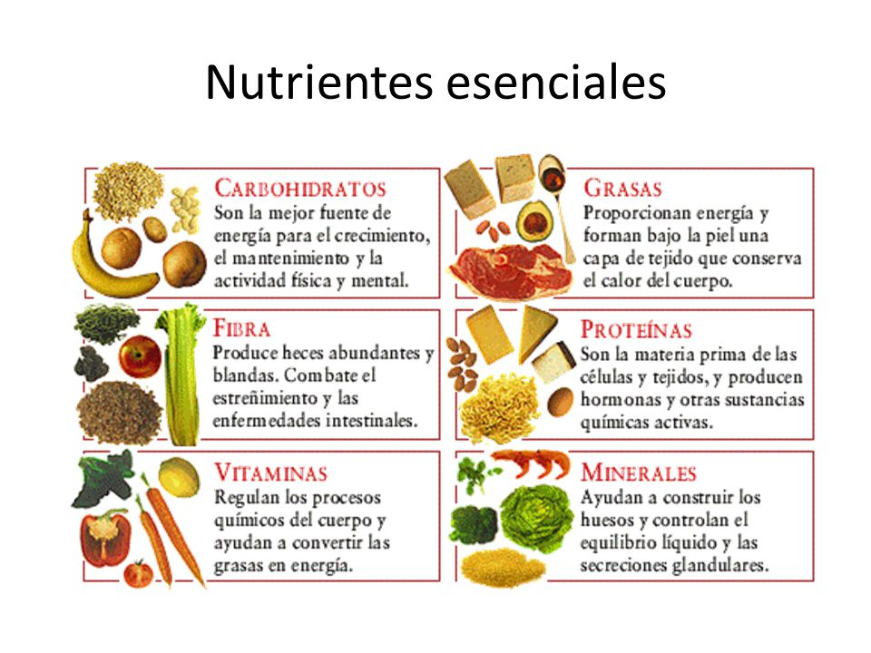

La nutrición es la ingesta de alimentos en relación con las necesidades dietéticas del organismo. Una buena nutrición (una dieta suficiente y equilibrada combinada con el ejercicio físico regular) es un elemento fundamental de la buena salud. Una mala nutrición puede reducir la inmunidad, aumentar la vulnerabilidad a las enfermedades, alterar el desarrollo físico y mental, y reducir la productividad.
La nutrición es salud, ya que al lograr una buena alimentación y una dieta saludable conseguirás una vida más sana y sin sobresaltos. Una buena nutrición depende fundamentalmente de que los hábitos alimenticios sean los adecuados en cada caso particular. Además, es importante que tomes mucho agua a diario, apartando las gaseosas y el alcohol para ocasiones esporádicas, tal como indican los buenos cursos de nutrición. Los hábitos alimenticios no sólo tienen que ver con el tipo de alimentos que ingerimos, sino también con las conductas y costumbres. Por eso, para empezar una vida sana debes modificar tus hábitos alimenticio.
Ciertos nutrientes, como el hierro y el calcio, por ejemplo, se encuentran muy repartidos en alimentos como legumbres y verduras; sin embargo el organismo no los aprovecha tan óptimamente como cuando proceden de la carne y derivados y de la leche, respectivamente. Básicamente, los alimentos se agrupan en los siguientes grupos: energéticos, que incluyen los hidratos de carbono (CHO) y las grasas; plásticos (proteínas), que intervienen como constructores; y reguladores (vitaminas y minerales).